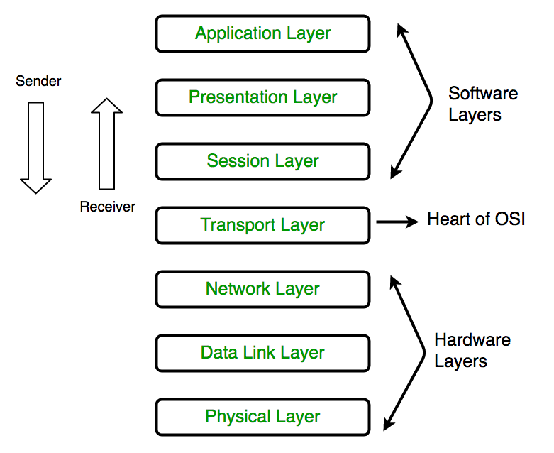

OSI Layer
Layers of OSI Model
OSI stands for Open Systems Interconnection. It has been developed by ISO – ‘International Organization for Standardization‘, in the year 1984. It is a 7 layer architecture with each layer having specific functionality to perform. All these 7 layers work collaboratively to transmit the data from one person to another across the globe.
1. Physical Layer (Layer 1) :
The lowest layer of the OSI reference model is the physical layer. It is responsible for the actual physical connection between the devices. The physical layer contains information in the form of bits. It is responsible for transmitting individual bits from one node to the next. When receiving data, this layer will get the signal received and convert it into 0s and 1s and send them to the Data Link layer, which will put the frame back together.

The functions of the physical layer are as follows:
1. synchronization: The physical layer provides the synchronization of the bits by providing a clock. This clock controls both sender and receiver thus providing synchronization at bit level.
2. Bit rate control: The Physical layer also defines the transmission rate i.e. the number of bits sent per second.
3. Physical topologies:Physical layer specifies the way in which the different, devices/nodes are arranged in a network i.e. bus, star, or mesh topology.
4. Transmission mode:Physical layer also defines the way in which the data flows between the two connected devices. The various transmission modes possible are Simplex, half-duplex and full-duplex.
2. Data Link Layer (DLL) (Layer 2) :
The data link layer is responsible for the node-to-node delivery of the message. The main function of this layer is to make sure data transfer is error-free from one node to another, over the physical layer. When a packet arrives in a network, it is the responsibility of DLL to transmit it to the Host using its MAC address.
Data Link Layer is divided into two sublayers:
1. Logical Link Control (LLC)
2. Media Access Control (MAC)
The packet received from the Network layer is further divided into frames depending on the frame size of NIC(Network Interface Card). DLL also encapsulates Sender and Receiver’s MAC address in the header.
The Receiver’s MAC address is obtained by placing an ARP(Address Resolution Protocol) request onto the wire asking “Who has that IP address?” and the destination host will reply with its MAC address.

The functions of the Data Link layer are :
1. Framing: Framing is a function of the data link layer. It provides a way for a sender to transmit a set of bits that are meaningful to the receiver. This can be accomplished by attaching special bit patterns to the beginning and end of the frame.
2. Physical addressing: After creating frames, the Data link layer adds physical addresses (MAC address) of the sender and/or receiver in the header of each frame.
3. Error control: Data link layer provides the mechanism of error control in which it detects and retransmits damaged or lost frames.
4. Flow Control: The data rate must be constant on both sides else the data may get corrupted thus, flow control coordinates the amount of data that can be sent before receiving acknowledgement.
5. Access control:When a single communication channel is shared by multiple devices, the MAC sub-layer of the data link layer helps to determine which device has control over the channel at a given time.
3. Network Layer (Layer 3) :
The network layer works for the transmission of data from one host to the other located in different networks. It also takes care of packet routing i.e. selection of the shortest path to transmit the packet, from the number of routes available. The sender & receiver’s IP addresses are placed in the header by the network layer.
The functions of the Network layer are :
1. Routing: The network layer protocols determine which route is suitable from source to destination. This function of the network layer is known as routing.
2. Logical Addressing: In order to identify each device on internetwork uniquely, the network layer defines an addressing scheme. The sender & receiver’s IP addresses are placed in the header by the network layer. Such an address distinguishes each device uniquely and universally.

4. Transport Layer (Layer 4) :
The transport layer provides services to the application layer and takes services from the network layer. The data in the transport layer is referred to as Segments. It is responsible for the End to End Delivery of the complete message. The transport layer also provides the acknowledgement of the successful data transmission and re-transmits the data if an error is found.
At sender’s side:Transport layer receives the formatted data from the upper layers, performs Segmentation, and also implements Flow & Error control to ensure proper data transmission. It also adds Source and Destination port numbers in its header and forwards the segmented data to the Network Layer.
Generally, this destination port number is configured, either by default or manually. For example, when a web application makes a request to a web server, it typically uses port number 80, because this is the default port assigned to web applications. Many applications have default ports assigned.
At receiver’s side:Transport Layer reads the port number from its header and forwards the Data which it has received to the respective application. It also performs sequencing and reassembling of the segmented data.
The functions of the transport layer are as follows:
1. Segmentation and Reassembly: This layer accepts the message from the (session) layer, and breaks the message into smaller units. Each of the segments produced has a header associated with it. The transport layer at the destination station reassembles the message.
2. Service Point Addressing: In order to deliver the message to the correct process, the transport layer header includes a type of address called service point address or port address. Thus by specifying this address, the transport layer makes sure that the message is delivered to the correct process.
The services provided by the transport layer :
A. Connection-Oriented Service: It is a three-phase process that includes
– Connection Establishment
– Data Transfer
– Termination / disconnection
In this type of transmission, the receiving device sends an acknowledgement, back to the source after a packet or group of packets is received. This type of transmission is reliable and secure.
B. Connectionless service: It is a one-phase process and includes Data Transfer. In this type of transmission, the receiver does not acknowledge receipt of a packet. This approach allows for much faster communication between devices. Connection-oriented service is more reliable than connectionless Service.
5. Session Layer (Layer 5) :
This layer is responsible for the establishment of connection, maintenance of sessions, authentication, and also ensures security.
The functions of the session layer are :
1. Session establishment, maintenance, and termination: The layer allows the two processes to establish, use and terminate a connection.
2. Synchronization:This layer allows a process to add checkpoints which are considered synchronization points into the data. These synchronization points help to identify the error so that the data is re-synchronized properly, and ends of the messages are not cut prematurely and data loss is avoided.
3. Dialog Controller: The session layer allows two systems to start communication with each other in half-duplex or full-duplex.
Scenario:
Let us consider a scenario where a user wants to send a message through some Messenger application running in his browser. The “Messenger” here acts as the application layer which provides the user with an interface to create the data. This message or so-called Data is compressed, encrypted (if any secure data), and converted into bits (0’s and 1’s) so that it can be transmitted.
6. Presentation Layer (Layer 6):
The presentation layer is also called the Translation layer. The data from the application layer is extracted here and manipulated as per the required format to transmit over the network.
The functions of the presentation layer are :
1. Translation: For example, ASCII to EBCDIC.
2. Encryption/ Decryption: Data encryption translates the data into another form or code. The encrypted data is known as the ciphertext and the decrypted data is known as plain text. A key value is used for encrypting as well as decrypting data.
3. Compression: Reduces the number of bits that need to be transmitted on the network.
7. Application Layer (Layer 7) :
At the very top of the OSI Reference Model stack of layers, we find the Application layer which is implemented by the network applications. These applications produce the data, which has to be transferred over the network. This layer also serves as a window for the application services to access the network and for displaying the received information to the user.
Example: Application – Browsers, Skype Messenger, etc.
The functions of the Application layer are :
1. Network Virtual Terminal
2. FTAM-File transfer access and management
3. Mail Services
4. Directory Services
OSI modelacts as a reference model and is not implemented on the Internet because of its late invention. The current model being used is the TCP/IP model.
OSI model in a nutshell